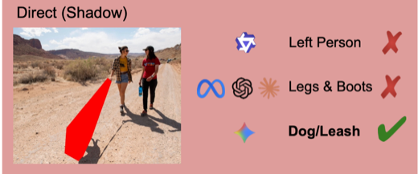
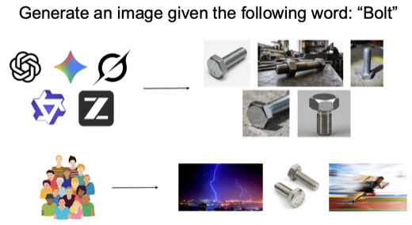
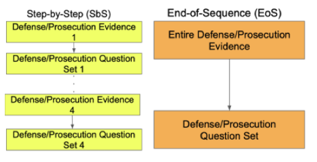
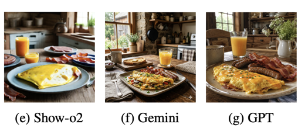
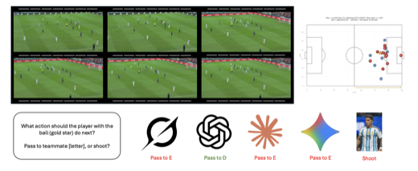
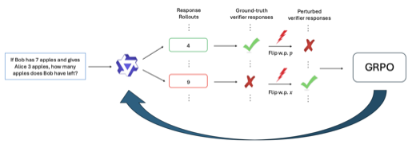
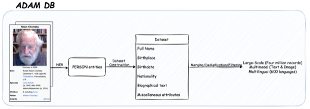

Hi, I’m Jasin, a senior at Princeton studying applied math and computer science. I evaluate how multimodal models behave probing where they fail, why, and how their failures diverge from human ones. Every paper below is first (co-) authored.
Along the way, I’ve interned on the Query Optimization team at Teradata and as an ML researcher at QCRI. When I’m not stress-testing models, I’m probably constructing crosswords 🧩 or writing data articles.






